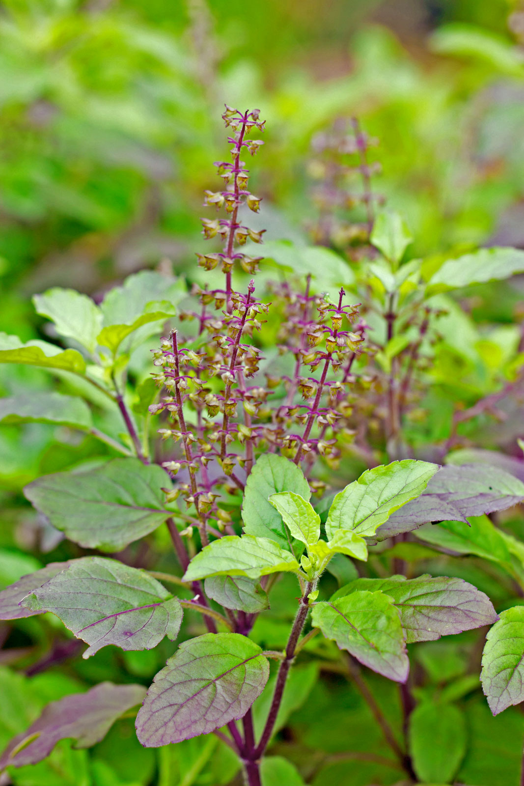
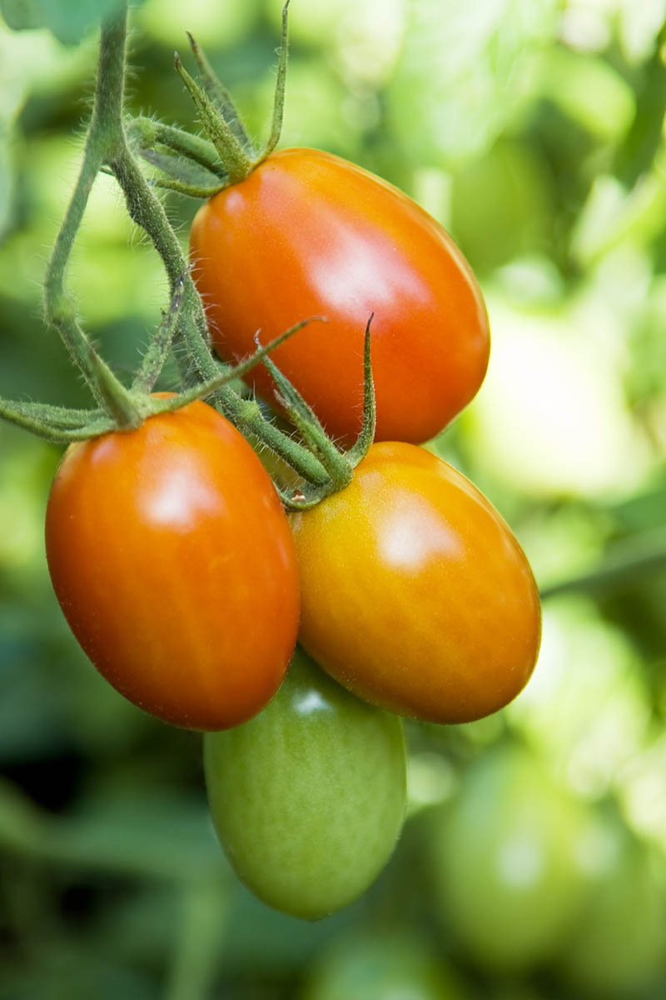
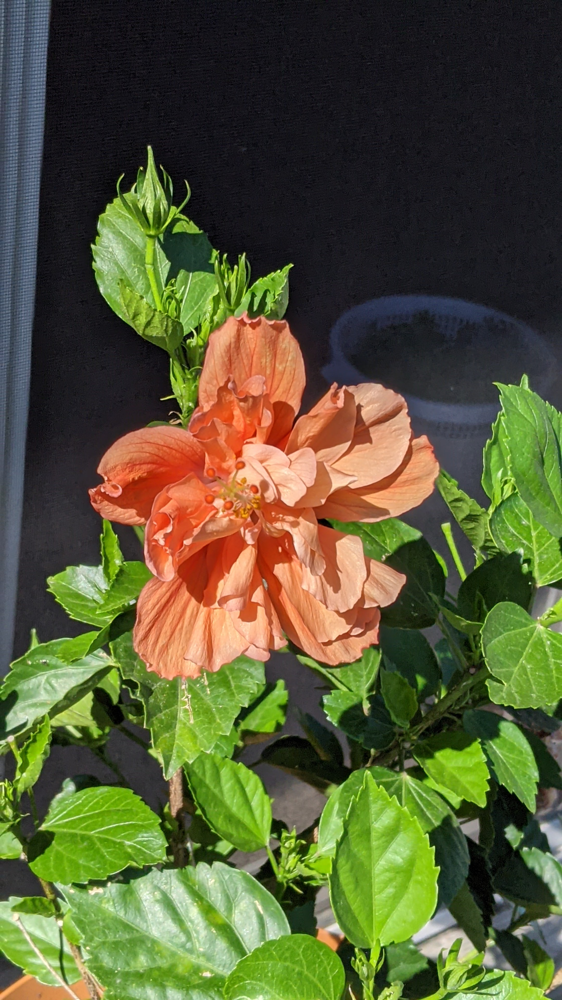

TULASI
Tulasi also known as Holi Basil, is flowering plant of the mint family grown for its aromatic leaves.
It is native to Indian subcontinent.In Hindu culture tulasi is considered as sacred plant.
I personally like it because it has many medicinal values and used as ailment in
'Ayurveda'.

ROMA TOMATO
The Roma tomato or Roma is a plum tomato popularly used both for canning and producing tomato paste because of its slender and firm nature.
Commonly found in supermarkets in some countries, Roma tomatoes are also known as Italian tomatoes or Italian plum tomatoes.

HIBISCUS
Hibiscus is a genus of flowering plants in the mallow family, Malvaceae. The genus is quite large,
comprising several hundred species that are native to warm temperate, subtropical and tropical regions throughout the world.
Member species are renowned for their large, showy flowers and those species are commonly known simply as "hibiscus", or less widely known as rose mallow. Other names include hardy hibiscus, rose of sharon, and tropical hibiscus.